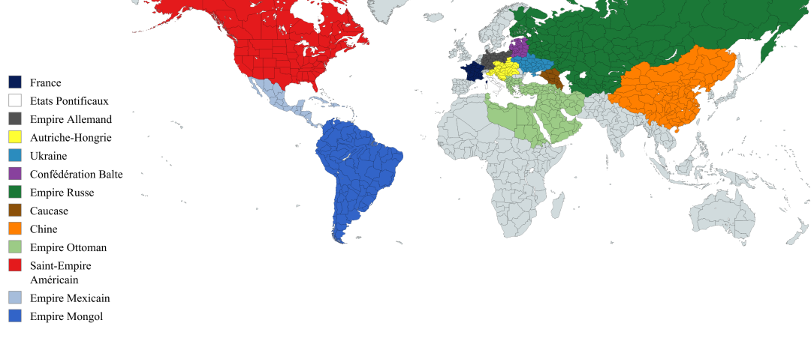
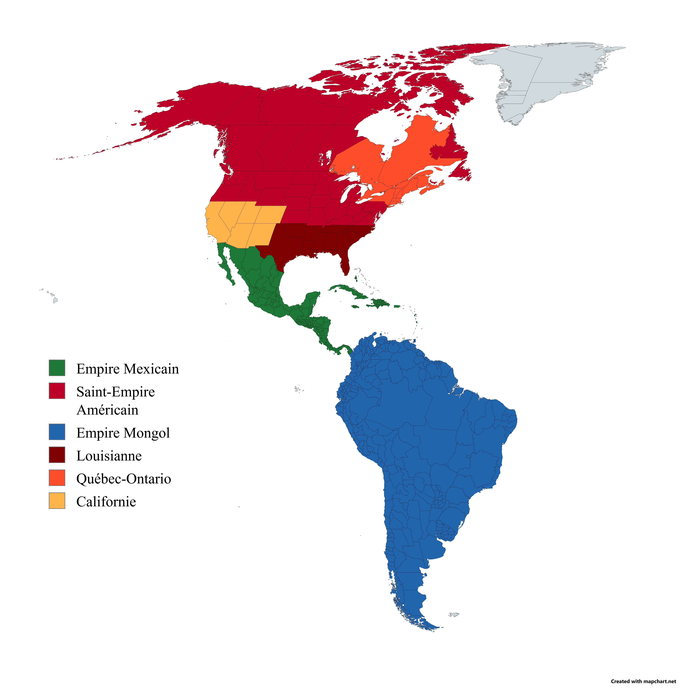
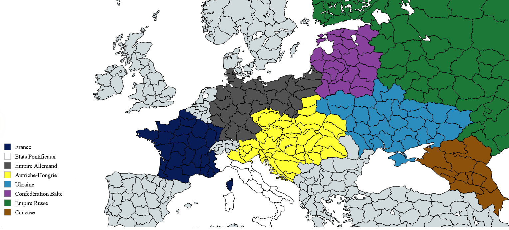

Sur cette carte sont présents les pays les plus importants de coeur de fer : TLE. Il faut ici remarquer l'aspect mondial du conflit qui se prépare, du nouveau monde à l'empire du milieu aucun pays ne sera épargné. Seulement deux puissances sont encore totalement neutre, l'Empire Ottoman et la Chine. Mais à l'instar des puissances nouvellement formées après la Grande Guerre, s'ils ne trouvent pas de raison à la nouvelle guerre qui s'annonce, il se peut être Raspoutine leur en donnera.
Le Mexique de Jules César est menacé par l'empire mongole sud-américain de Gengis Khan. Nous pouvons également remarquer l'étendue du Saint-Empire-Américain avec à sa tête la Lousianne de Napoléon et comme coeur industriel le royaume du Québec-Ontario de Bismark. Le Mexique a récemment finalisé l'unification des caraïbes et pourrait avoir besoin de temps pour faire perdurer son emprise sur les îles. Le Saint-Empire, allié historique du mexique, est en proie à l'instabilité interne alors que les puissances mineurs votent pour la neutralité de l'empire, Napoleon lui hesite toujours entre trahir bismark pour assoir sont autorité ou suivre la Californie dans son expansion au sud. L'empire mongol, au sommet de sa gloire, après la conquête de l'amérique du sud, est déjà prêt face au conflit à venir.


Alors que l'empire russe mené par Raspoutine se prépare à recupérer ses territoires perdu après la croisade, l'Empire Allemand et l'Autriche-Hongrie semblent eux aussi se préparer à une guerre préventive. La France de Macron et les Etats Pontificaux d'Aiglecitron semble préparer leur alliance historique.